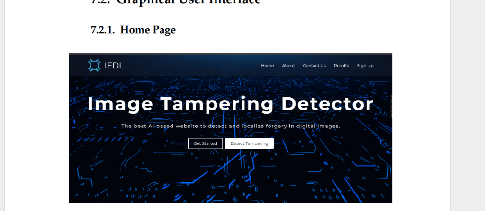
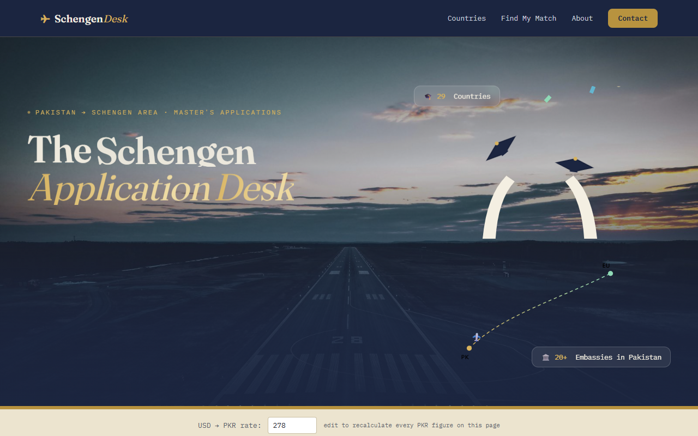
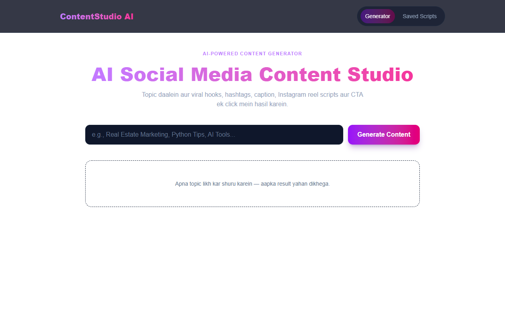
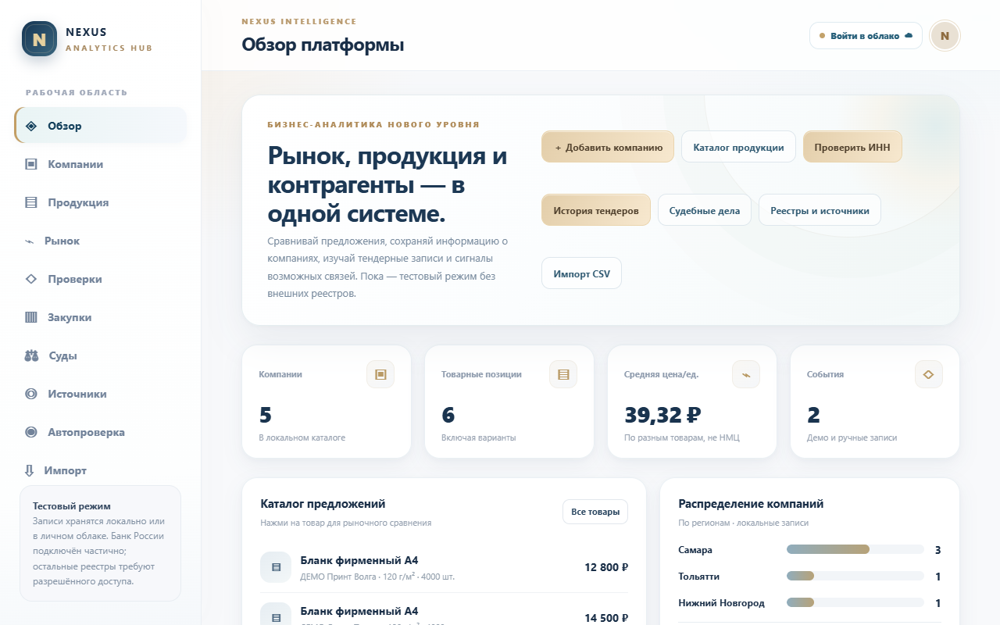
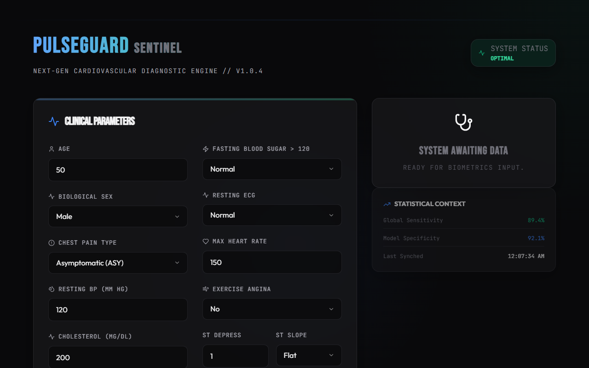
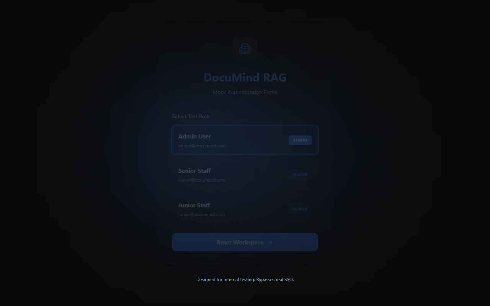

Full-stack web systems, autonomous AI agents, and computer vision forensics engineered with sub-second execution.
Architected for sub-second execution, enterprise reliability, and scalable digital throughput.
Next.js 14 and React 19 interfaces backed by FastAPI microservices, tuned for <120ms edge latency.
Thesis research in media forensics using PyTorch CNNs and Fourier analysis for real-time deepfake detection.
LangGraph multi-agent workflows with tool-calling execution and persistent state memory graphs.
High-throughput Python pipelines and statistical modeling with automated ETL and predictive analytics.
Semantic retrieval systems with ChromaDB and Pinecone, featuring hybrid vector search and grounded citations.
Containerized cloud deployments with Docker, GitHub Actions CI/CD workflows, and Playwright test suites.
Predictable engineering engagements tailored for startups and scaling platforms.
Turnkey web platform or AI application engineering from architecture to production deployment.
Specialized intelligence integration—embedding computer vision, ML models, and RAG pipelines.
Dedicated senior bandwidth for ongoing feature velocity, architecture reviews, and AI maintenance.
Production systems with clean architecture, verified source code, and live deployments.
Enterprise property development and pipeline CRM with role-based auth, client lead tracking, and deal analytics.

Dual-stream CNN combining spatial analysis with FFT spectral transforms to expose synthetic deepfakes and manipulation anomalies.

Real-time visa calculation platform with requirements analysis, stay tracking, and interactive policy guidelines.

Multi-modal AI studio integrating GPT-4 and Claude with dynamic prompt templates and real-time SSE streaming.
Headless e-commerce store with Stripe checkout, PostgreSQL Prisma ORM, and Redis session cart persistence.

Predictive analytics workstation with time-series forecasting, automated cohort segmentation, and Arrow streaming.

Biometric diagnostic engine with multi-parameter clinical risk scoring, sensitivity analysis, and real-time telemetry.

Enterprise RAG engine using ChromaDB vector search with semantic chunking and verified source citations.
How every production system is engineered, benchmarked, and deployed with zero-regression guarantees. No untested shortcuts, no bloated abstractions.
100% test coverage on critical API paths, deterministic schema validations, and automated rollback triggers on production deployments.
Database normalization, entity relationships, API contract specifications, threat modeling, and latency budgeting. Choosing the optimal balance between edge rendering and microservice compute.
Writing typed TypeScript components, structuring Python/FastAPI microservices, training deep learning architectures (IFDL ResNet-50 / FFT), and configuring vector embedding stores with sub-second retrieval.
Executing Playwright end-to-end browser journeys, PyTest unit suites, load concurrency stress tests, and Core Web Vitals audits to verify sub-second performance under peak traffic.
Deploying containerized Docker images and Next.js Vercel Edge networks with GitHub Actions CI/CD workflows, automated rollback triggers, and live telemetry health probes.
Freelance & company full-stack engineering and deep learning systems.
Live Vercel edge applications and verified open GitHub code repositories.
Thesis deep learning benchmark on synthetic deepfake frequency analysis.
Sub-second server response, zero layout shift, and instant interaction.
Available for full-stack product builds, specialized machine learning contracts, and senior technical retainers. Expect structured architecture, clean repositories, and sub-second execution.